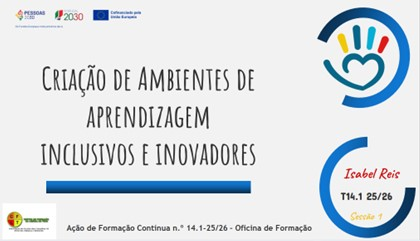
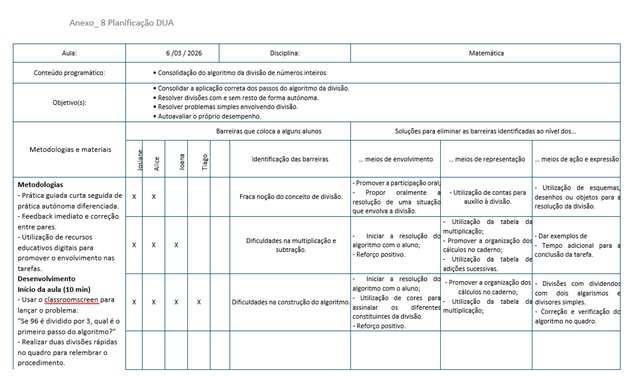

por João Garcia
Site desenvolvido com apoio da IA
Este é um diário acerca da atividade desenvolvida durante a formação de Criação de Ambientes de Aprendizagem Inclusivos e Inovadores.

Nesta secção encontram-se os registos diários da formação, com resumos, evidências e reflexões de cada sessão.
Hoje começámos por nos apresentar — formandos e formadora — num daqueles momentos simples que ajudam a criar terreno comum. Depois, fomos desfiando a estrutura da formação. Seguiu‑se uma primeira aproximação à plataforma Moodle do CFAE, onde iremos concentrar materiais, tarefas e comunicações. Aos poucos, fomos ganhando familiaridade com o espaço digital que nos vai acompanhar. Dedicámos também um bom tempo a revisitar as orientações políticas para a Educação Inclusiva, consolidando ideias e alinhando conceitos. Terminámos com a realização das atividades previstas para a sessão, já com a sensação de que começamos a construir um caminho comum.
O interesse pela temática da inclusão é real! Há a necessidade de aprender mais sobre este tema de forma a aproximar as práticas às necessidades de todos os alunos na turma. Aguardo com espectativa as próximas sessões. Até lá, tenho que comentar frases no Tricider e refletir sobre as práticas inclusivas da escola para acrescentar no padlet
Passámos por várias coisas importantes: começámos por acabar o trabalho não finalizado na sessão anterior. Depois, revisitamos os documentos que orientam a Educação Inclusiva e entrámos também no DL 54/2018. Parámos para falar sobre Educação Inclusiva e partilhar algumas experiências. No fim, arregaçámos as mangas e fizemos as atividades previstas para a sessão, já com tudo isto mais claro na cabeça. Sessão num tom de partilha construtivo em que fomos conversando sobre a inclusão e conhecendo diferentes pontos de vista.
Esta sessão de partilha de pontos de vista abriu horizontes e foi insiradora. Tenho de refletir sobre um tema e publicar no padlet com os trabalhos dos formandos. Escolhi o tema De que forma a ENEC nos desafia a pensar a formação de um cidadão no Mundo?. Depois desta esclarecedora sessão será fácil.
Ao longo da sessão fomos consolidando aquilo que já sabíamos sobre os modelos que ajudam a pôr em prática a Educação Inclusiva — nada como voltar a olhar para eles com calma para perceber como tudo se articula. Depois, mergulhámos na abordagem multinível, percebendo como ela nos dá pistas para responder melhor às necessidades de cada aluno. Também parámos para identificar os princípios que realmente sustentam a criação de ambientes educativos inclusivos — aqueles que fazem a diferença no dia a dia. Falámos ainda do famoso Efeito Pigmaleão, que nos lembra o impacto gigante que as expectativas dos adultos têm no percurso dos alunos. E claro, finalizamos a sessão com as atividades previstas.
Depois desta sessão é interessante olhar novamente para os nossos alunos e perceber que é nosso dever orientá-los com generosidade e atenção às suas necessidades. Há muito trabalho para fazer! Análise dos processos que dificultam a aprendizagem dos alunos com maiores dificuldade e iniciar o diário da formação. Comecei por dar início a este diário.
Esta foi mais uma boa sessão de partilha. Começámos por partilhar os resultados da atividade anterior e deu para perceber a forma como cada um olha para o percurso dos estudantes. Depois, mergulhámos nos princípios que estão por trás da diferenciação pedagógica, olhando para os perfis dos alunos — desde os níveis de complexidade cognitiva às estratégias de ensino mais ativas, passando pelos estilos de aprendizagem e pelas inteligências múltiplas. Este tema apaixonou-me realmente. É extremamente importante perceber a forma como os nossos alunos aprendem e definir uma inteligência dominante na turma. Partindo deste ponto é essencial ajustar as estratégias e metodologias de forma a promover aprendizagens com significado. Conhecemos vários testes que promovem o conhecimento das inteligências multiplas dominantes e ficou a tarefa de identifcar a predominante na nossa turma. Aproveitámos ainda para aprofundar algumas metodologias e estratégias pedagógicas inclusivas e inovadoras, pensando na forma como organizamos a sala de aula e em como os ambientes educativos podem realmente apoiar todos os alunos.
Dei uma vista de olhos com bastante interesse e atenção às diferentes forma de caracterização da turma. Rápidamente defini um teste para aplicar e recolher a informação. Estou curioso para perceber qual é a inteligência multipla dominante na turma. Entretanto, já descobri a minha! Há ainda um pequeno trabalho de grupo. Uma reflexão conjunta sobre os princípios de aprendizagem que iremos fazer durante a semana que se avizinha.
Ao longo da sessão fomos consolidando aquilo que já tínhamos explorado sobre os modelos que ajudam a pôr em prática a educação inclusiva — voltámos aos temas da sessão anterior, como a organização da sala de aula e os ambientes educativos inovadores, para ligar melhor as ideias. Depois, mergulhámos nos princípios do Desenho Universal para a Aprendizagem (DUA), pensando em como planear de forma mais intencional, conciliando aquilo que os alunos precisam de aprender com as suas características, ritmos e formas de estar.
Entusiasmado com o trabalho a fazer, porém estou com pouco tempo e não sei se irei dar a atenção devida ao documento. A ver se me oriento para o fazer a tempo de o colocar no padlet que contem as tarefas semanais que os formandos devem realizar.
Nesta sessão falamos do que já fazemos em sala de aula à luz do DUA, trocando experiências e percebendo como cada um vai aplicando estes princípios no dia a dia. Foi interessante ver como, mesmo com práticas diferentes, todos caminhamos no mesmo sentido: tornar a aprendizagem mais acessível e flexível. Depois, voltámos aos princípios do DUA, pensando em como podem orientar o planeamento. A ideia foi perceber como o DUA nos ajuda a criar opções reais para todos. No final, ficou a sensação de que o DUA não é um “extra”, mas uma forma mais consciente e intencional de planear para todos.
Há que pôr as mãos na massa e tentar aplicar o DUA numa aula, escolhendo estratégias, formatos e abordagens que permitem aos alunos aceder, participar e mostrar o que sabem de maneiras diferentes. Escolhi um tema para trabalhar na aula. Vou usar a disciplina de matemática e fazer uma atividade prática sobre a divisão, procurando diversificar estratégias e metodologias para chegar a todos os alunos.
Na sessão, começámos por partilhar os resultados da aplicação dos testes de Inteligências Múltiplas. A turma que leciono é predominantemente Naturalista e também Musical. Foi interessante conversar sobre este assunto e partilhar pontos de vista, estratégias e ideias sobre as formas de melhoar as aprendizagens, conhecendo as maneiras de como os alunos aprendem. Falámos também da avaliação formativa e da sua intencionalidade: mais do que “avaliar”, serve para melhorar as aprendizagens e ajustar o ensino sempre que necessário. Dentro deste processo, destacámos o feedback, que é essencial para orientar os alunos, clarificar expectativas e ajudá‑los a perceber os próximos passos. Por fim, reforçámos a importância de encarar a avaliação como parte natural da gestão inclusiva do currículo, um instrumento que apoia o ensino e as aprendizagens, garantindo que todos têm oportunidades reais de progredir.
Há um trabalho de grupo para fazer e que será uma boa oportunidade de conversar e refletir em conjunto. Temos de refletir sobre a diversificação de instrumentos de avaliação. Temos algum tempo para o fazer e este tema é um bom mote para ocupar o tempo livre desta semana. No final teremos de publicar no padlet da formação que vai ficando composto e completo de reflexões e excelentes trabalhos.
Na sessão, começámos por partilhar as conclusões da atividade sobre a avaliação e o seu papel fundamental no processo de ensino e aprendizagem. Foi interessante perceber e comparar experiências e como pequenas mudanças podem ter um grande impacto no progresso dos alunos. Depois, voltámos a olhar para a diversidade dos alunos, tentando perceber como planear de forma mais estratégica e intencional, ajustando a dinâmica pedagógica às características de cada grupo. A ideia foi pensar menos em “um plano para todos” e mais em “várias portas de entrada” para a aprendizagem. Ao longo da sessão, houve também espaço para partilhar, cooperar e pôr mãos à obra nas atividades propostas, sempre com aquele espírito de colaboração que faz tudo fluir melhor.
A planificação DUA não ficou esquecida. É tempo de recuperar o que fiz e melhorar, aplicar e desenvolver mais o trabalho. Não há muito tempo para o fazer agora! Altura de avaliações de final de período exigem muita atenção e cuidado. O que vale é que terei de apresentar este trabalho depois da pausa da páscoa. Há tempo para melhorar não só o trabalho como este diário!
Hoje voltamos a mergulhar na planificação DUA que temos vindo a trabalhar e estivemos a tirar dúvidas e a clarificar processos, com vista à apresentação do trabalho final. Depois abordamos as dimensões da diversidade e em como isso mexe com a forma como organizo a sala. Quanto mais penso nisso, mais percebo que não dá para ensinar “para todos” sem realmente olhar para cada um. A ideia é mesmo essa: criar espaço para que todos participem e aprendam de verdade. Também falámos da importância de ouvir os alunos — ouvir mesmo — e de trazer as famílias para dentro do processo. Faz toda a diferença quando sentimos que não estamos a trabalhar sozinhos. Fui ainda tentando identificar o que faz um ambiente ser inclusivo e acolhedor. Não é só decoração bonita; é a forma como nos relacionamos, como ajustamos, como abrimos portas. No fim, lá estivemos a partilhar, cooperar e pôr mãos à obra nas atividades da sessão. Saí com a cabeça cheia, mas no bom sentido. Há várias tarefas para realizar para a próxima sessão. Um comentário acerca das dimensões da diversidade e a autoavaliação, ambas a publicar no padlet com os trabalhos dos formandos.
Avizinha-se muito trabalho pela frente para apresentação das conclusões da planificação DUA e do trabalho feito em contexto de aula. Tenho também de finalizar os registos do meu diário e transformar este trabalho numa apresentação com foco no trabalho realizado. O que vale é que tenho vindo a fazer os registos aos poucos e tenho tudo mais ou menos orientado. Tenho ainda de fazer a minha autoavaliação o que será fácil pois encontro-me motivado com a temática abordada e tenho realizado os trabalhos solicitados. Esta é sem dúvida uma excelente formação e que me serviu para modificar e melhorar a minha prática.
Hoje foi dia de apresentar o trabalho final da formação, e confesso que cheguei à sessão com aquele misto de nervos e alívio. Nervos porque é sempre diferente quando temos de mostrar o que fizemos; alívio porque, depois de tantas semanas a planear, experimentar e ajustar, finalmente pude fechar o ciclo. Enquanto apresentava, fui percebendo como todo o processo — desde a planificação DUA até às atividades em sala — me obrigou a olhar para a minha prática com mais intenção. Não foi só “fazer por fazer”; foi pensar no porquê, no para quem e no como. E isso deu outra profundidade ao trabalho. A partilha com o grupo também ajudou. Ouvir as experiências dos outros fez-me sentir que estamos todos a tentar puxar a escola para um lugar mais inclusivo e mais atento às diferenças. Saí com a sensação de que este percurso valeu mesmo a pena.
Agora que a apresentação está feita já não sinto o nervosinho! Fica a vontade de continuar a melhorar e a sensação de que este percurso formativo valeu mesmo a pena.
Aplicar a planificação DUA na aula sobre o algoritmo da divisão acabou por ser um daqueles momentos em que percebemos, na prática, porque é que vale a pena pensar a aula “para todos” desde o início. Ao preparar a sessão, tentei antecipar as diferentes formas como os alunos poderiam aceder ao conteúdo, participar e mostrar o que sabiam e isso obrigou-me a olhar para a divisão de um modo menos rígido e mais flexível. Durante a aula, fez diferença ter materiais manipuláveis, exemplos visuais e tarefas com níveis de apoio distintos. Os alunos que costumam sentir mais dificuldade puderam trabalhar com materiais manipuláveis e participar oralmente, contribuindo para retirar dúvidas e ganhar motivação e confiança nas prórias capacidades. No fundo, a diferenciação é fundamental neste processo de desenho da aula. Também notei que as medidas de suporte, mesmo as mais simples, como apoiar individualmente os alunos com maior dificuldade, dar feedback acerca do trabalho feito e orientar o aluno nos aspetos a melhorar, criaram um ambiente mais tranquilo. Houve menos ansiedade e mais espaço para cada um experimentar o algoritmo ao seu ritmo. E isso refletiu-se na participação: mais mãos no ar, mais perguntas, mais tentativas. No final, fiquei com a sensação de que o DUA não é uma teoria distante. É sim uma forma de planear que nos obriga a pensar nos alunos e nas dificuldades reais que temos à frente. A aula correu melhor não porque tudo foi perfeito, mas porque houve margem para todos entrarem na aprendizagem e ultrapassarem as barreiras impostas pelas dificuldades. E isso, para mim, é o que faz a diferença no trabalho diário.

Esta formação acabou por ser mais do que um conjunto de sessões; foi um espaço real de crescimento profissional. Ao longo do percurso, fui ganhando novas perspetivas, ferramentas e formas de olhar para a sala de aula que, inevitavelmente, vão influenciar o meu trabalho diário. Percebi melhor como ajustar práticas, como criar ambientes mais inclusivos e como tomar decisões pedagógicas mais intencionais. No fundo, saio desta experiência mais preparado, mais consciente e com uma visão mais sólida sobre o que significa ensinar de forma eficaz e humana.